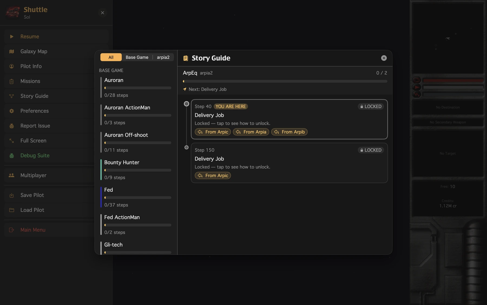
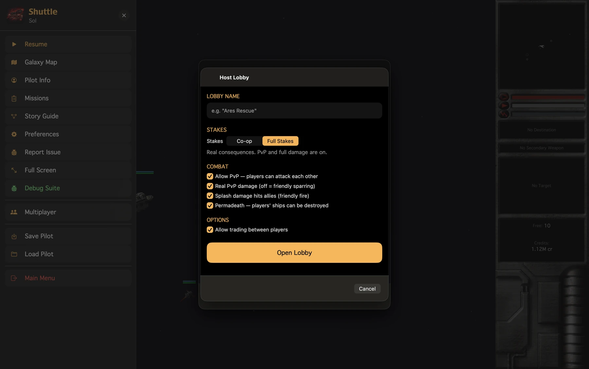
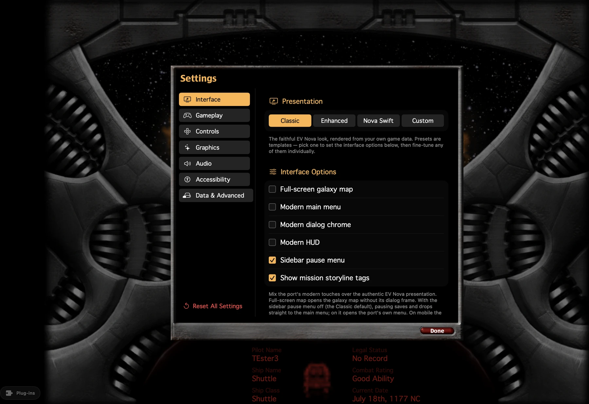
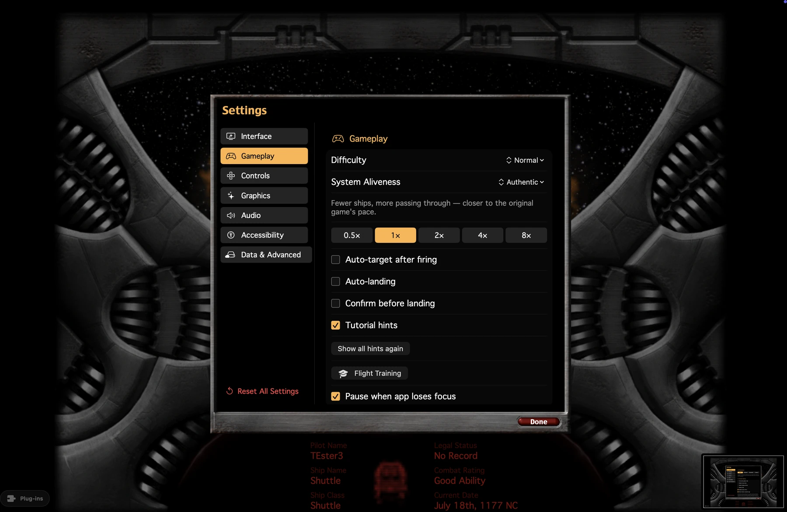
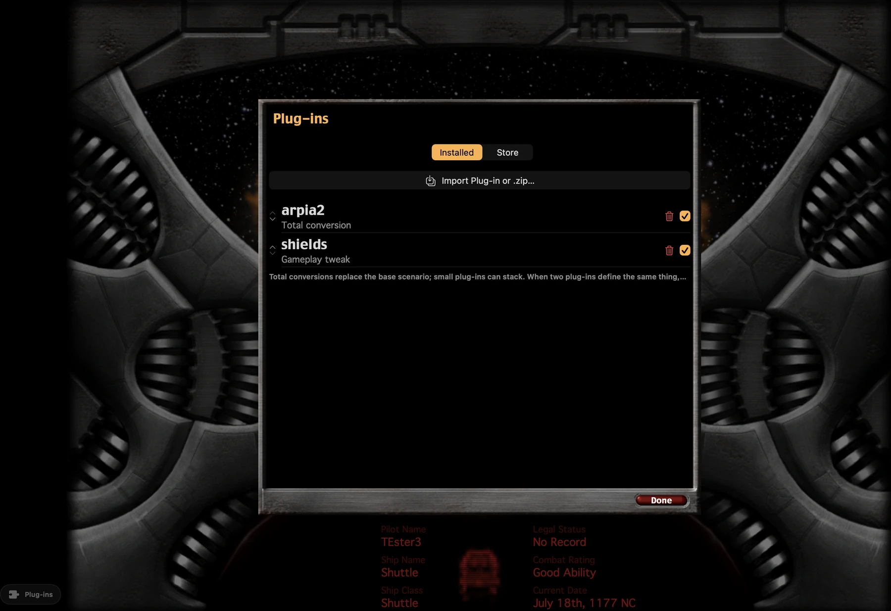
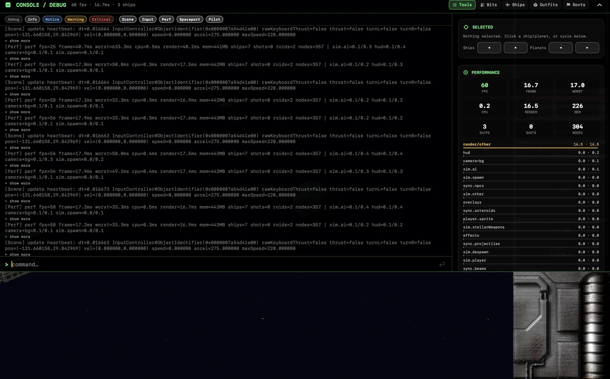
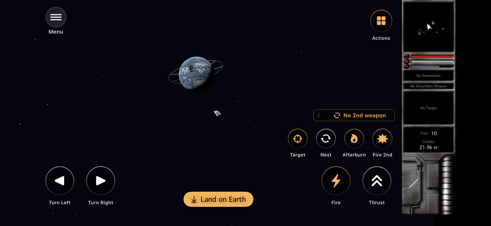
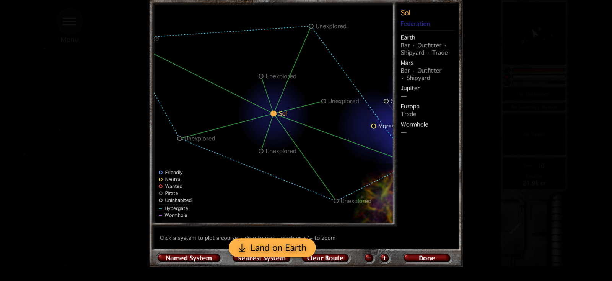
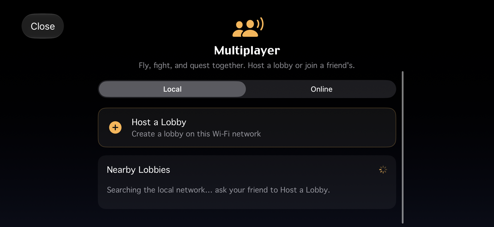
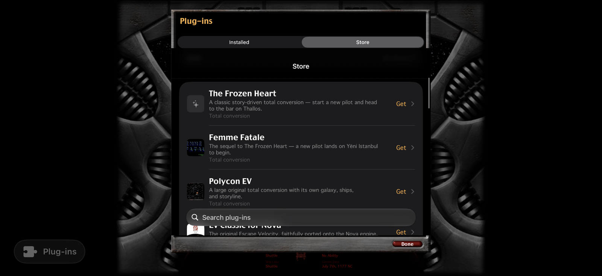

Beyond the original
Six things EV Nova never had.
Every one of them optional. Set the game to Classic and it behaves like 2002.





.zip. Reorder the load stack, switch anything off — conversions and small tweaks side by side.
Running on iPhone
Not a Mac screenshot.
EV Nova never came to mobile. These are real captures from a phone.




The game itself
It's 1177. You have a Shuttle and no plans.
Fly
Momentum flight — you don't turn, you swing the nose around and keep going the way you were.
Trade
Work the spread across hundreds of systems, then trade the Shuttle up for something with guns.
Choose a side
Federation, Rebellion, the Auroran succession, the Polaris. Campaigns branch; the news reacts.
Take what's yours
Board a crippled freighter, fly it home with a prize crew, or make a planet pay you tribute daily.
Status
Playable start to finish. Still being sharpened.
Roughly 90% of a full port: flight, combat, economy, branching campaigns, boarding, domination — all in, on all four platforms.
Done and shipping
- The full game, all four Apple platforms
- Co-op multiplayer with configurable stakes
- Controller support, remappable, everywhere
- In-app plug-in store and manager
- iCloud sync — import once, play anywhere
Still ahead
- Godot port for Linux and Windows — same Swift engine, second frontend. In progress
- Fidelity — AI, flight feel and spawn cadence, down to the last tell
- Hardening — bugs and performance across more devices
- Smarter opt-in AI — evasion, fleet coordination, ammo discipline
- Optional HD art and audio, layered over the originals
Found something off? The issue tracker is the best place to say so.
Get it
Two ways in.
Play now: the TestFlight beta covers all four platforms — no build step.
Or build it: you'll need a Mac with Xcode. Your game data stays on your machine.
# clone and fetch dependencies
git clone https://github.com/SirStig/MacOS-iOS-iPadOS-EV-Nova.git
cd MacOS-iOS-iPadOS-EV-Nova && scripts/setup.sh
# drop your own EV Nova data into data/base/
# then open it in Xcode, pick a target, hit Run
open app/NovaSwift.xcodeprojYou bring the game.
We ship the code; you supply the data. EV Nova's content belongs to ATMOS, so this project contains zero copyrighted game data and never will — it reads a copy you already own, at runtime. Same model as OpenMW and OpenRA.